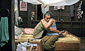

Consumer publisher of the year | 15 September 2010
-
Coulson 'discussed hacking at NoW'
New York Times publishes claims PM's media adviser 'actively encouraged' unlawful practice while editor -
Hague moves on from gay claim
Minister seeks to draw line under 'untrue allegations' about relationship with special adviser as he meets German counterpart -
Milibands reject Blair's deficit view
David and Ed Miliband distance themselves from former PM's support for coalition's economic strategy -
Australia close to Labor minority rule
Julia Gillard could return to power after one of three independent MPs holding key to next government announces support -
Data shows complaints against police
Northern Ireland, West Mercia and Lincolnshire forces had most complaints per officer last year -
Hostage taker shot dead by police
Hostage crisis at Discovery Channel headquarters in Maryland ends with safe escape of all three hostages -
Sugar warning over newborn babies
Research in The Lancet warns that existing medical practice does not work and may cause brain damage -
Inquiry into doorstep sales agents
Ofgem investigates gas and electricity callers over claims they mislead households into switching supplier -
Schools told to prioritise poor pupils
Schools must 'earn' poor pupil payment of up to £3,000, Sutton Trust advises education secretary -
Mine rescuers spark 'good news' row
Controversy erupts over attempts to keep trapped Chilean miners' spirits up by censoring bad news from papers and letters -
BBC staff vote to strike over pensions
Members of three unions vote by over 90% for strike action over changes to their pensions -
Full inquest into Kelly death nears
Officials to examine weapons inspector's post mortem files before submitting conclusions to attorney general -
Ferrari recalls 458 Italias after fires
£170,000 supercars appear to have a design fault which can make them burst into flames
On guardian.co.uk today
-
Billy Liar: all hail Ambrosia!
Laura Barton asks Tom Courtenay and Julie Christie why the story of smalltown frustration still endures -
Life on the waiting list: action stations
Eight years ago James Hipwell got a kidney from his brother. Now he prepares for surgery again, this time alongside his wife -
Facebook under fire over energy use
Social networking site intends to run giant new data centre mainly on coal-powered electricity -
Cannes winner panned by critics
It won the Palme d'Or, but Parisian critics call Thai film Uncle Boonmee Who Can Recall His Past Lives 'pointless, obscure and excruciatingly boring' -
Autumn TV treats: comedy gold
The return of The Inbetweeners and Peep Show to new sitcom Him & Her, via Chekhov and Chevy Chase -
Photographer Zed Nelson's best shot
I took this in a Dallas gun shop. For Mike, who was buying bullets, it summed up protecting his family -
Borders sees sharp fall in revenue
US retail chain says losses increase as it struggles to fight online retailers and rise of e-readers
Current topics
Tony Blair picks
-
Believe – and then feel sick
Amid torrid prose and moral absolutes are truths and revelations that make A Journey impossible to put down, says Julian Glover -
Brown holds fire over criticisms
Battle that dominated decade of Labour government reopened as former PM's draft of history becomes instant bestseller -
Digested read: A Journey
WMDs, George Bush, Cherie and Gordo: Tony Blair's memoir in just 818 words!
-
Murray beats Lacko in US Open
Andy Murray will take on Jamaica's Dustin Brown, who wants to play Davis Cup tennis for Great Britain, in the second round -
Pakistan trio unlikely to face charges
The three Pakistan cricketers at the centre betting allegations are highly unlikely to face criminal charges, legal experts have said
-
Mercury sessions: Villagers
Mercury-nominated Conor O'Brien of Villagers visits our studio to play their song Set the Tigers Free -
Audio: Tech Weekly: What next for online music? (26min 33sec)

On guardian.co.uk
Last 24 hours
- 1. News: Christine O'Donnell brings unlikely Tea Party triumph to Delaware
- 2. Football: Antonio Valencia's season over as Rangers hold Manchester United
- 3. News: Real IRA says it will target UK bankers
- 4. News: Pope's visit: aide steps aside after comparing Britain to 'third world'
- 5. News: Harsh judgments on the pope and religion
Last 24 hours
- News: Tony Blair interviewed by Katie Couric - live
- News: Christine O'Donnell brings unlikely Tea Party triumph to Delaware
- Business: McDonald's under fire: are shock TV ads fair?
- Sport: Win tickets to see England v Pakistan at Lord's
- Society: Sex trafficking gang offered to sell young virgins to wealthy Arabs
-
More zeitgeist
 What is Zeitgeist?
What is Zeitgeist?Zeitgeist is an experiment in showing trending news, topics and articles from the Guardian. Find out more in our blog post.

Today's paper
Ads by Google
Official Toyota Site
Find The Model That Suits You With Toyota. Compare Our Range Now.
Children's Charities
Sponsor A Child With World Vision. Make A Difference, Give A Child Joy
-
Guardian ad networks
-
Reaching out to everday eco-conscious people
Guardian offers
California and the Golden West
14 nights fully escorted from £1299pp
News direct to you
-
iPad app
Download our Eyewitness photography app -
Digital Archive
Browse back issues of the Guardian and Observer -
Mobile services
Get guardian.co.uk on your mobile phone or handheld device. New iPhone app available now -
Digital edition
Read the Guardian and the Observer as they were printed - easy navigation and downloadable pages -
Subscriptions
Save 33% when you subscribe to the Guardian and the Observer -
Email services
Have the top news and columnists delivered to your inbox every morning

Comment & debate
Comment is free, on getting real equality for disabled people
DuncanMcFarlane
Politics, On Tony Blair's autobiography
Sipech
Media, on the BBC's failure to stop The Stig from Top Gear revealing his identity